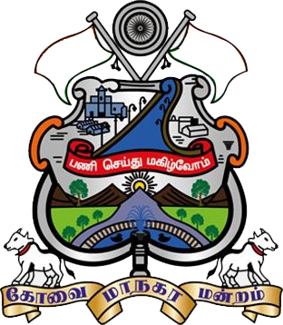

Welcome to the official civic services portal for Coimbatore. We are committed to delivering transparent, efficient, and rapid public services. Engage with your municipal corporation to report issues concerning sanitation, public infrastructure, and utilities.
Our dedicated nodal officers ensure your complaints are tracked and assigned around the clock.
Pinpoint the exact location of civic issues so ground teams can resolve them rapidly.
Issues unresolved within 48 hours are automatically escalated to higher municipal authorities.
Your participation plays a vital role in building a cleaner, safer, and smarter Coimbatore. Through this portal, citizens can report civic issues related to sanitation, waste management, damaged roads, street lighting, water supply, and public infrastructure. Together, we aim to improve urban living standards through transparent governance, rapid response systems, and community collaboration.